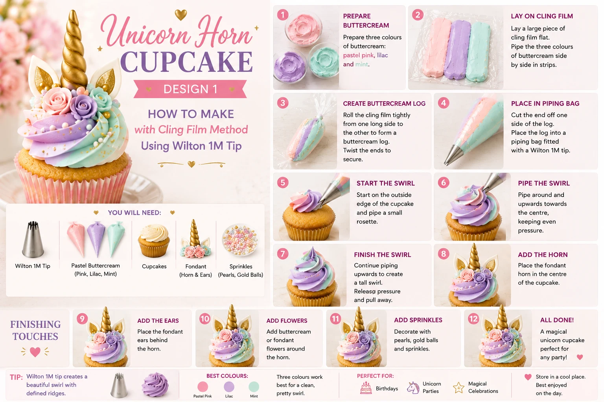
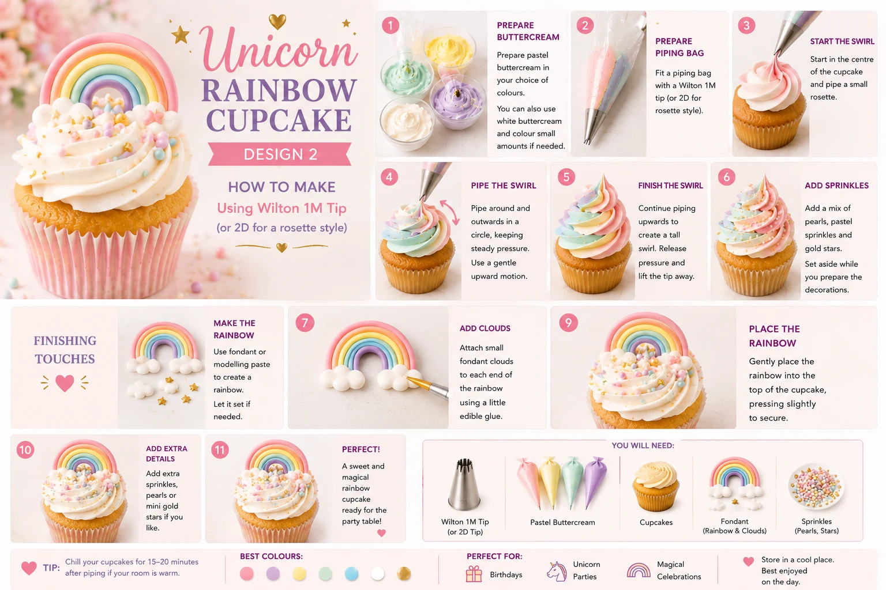

Unicorn cupcakes are one of the most popular choices for children’s birthdays and magical-theme dessert tables. With pastel swirls, gold horn toppers, fondant ears and rainbow details, they look spectacular on a party table without requiring advanced decorating skills.
At Little Moment Studio, our focus is balloon styling and celebration setups. We work with Berrylicious Cakes, a trusted local cake maker, to provide cupcakes and cakes that coordinate with our balloon displays. These unicorn cupcake ideas are designed as inspiration for your celebration table, whether you are making them yourself or ordering from a cake maker.
This guide covers two easy unicorn cupcake designs:
- Unicorn Horn Swirl Cupcakes
- Rainbow Cloud Cupcakes
Both designs are beginner-friendly and work beautifully alongside pastel balloon garlands, unicorn-themed backdrops and coordinated party styling. To see how they look as part of a full setup, take a look at our unicorn party balloon and dessert table ideas.
Why These Two Designs Work
These two designs complement each other because they contrast in height and detail. The unicorn horn swirl cupcakes create the main visual impact with tall, colourful swirls and striking horn toppers, while the rainbow cloud cupcakes add a softer, whimsical finish that ties in the rainbow elements of a unicorn theme. Together, they give the dessert table variety and depth.
| Design | Style | Difficulty | Best For |
|---|---|---|---|
| Unicorn horn swirl cupcake | Tall pastel swirl with gold horn topper | Easy | Height and main impact |
| Rainbow cloud cupcake | Soft swirl with fondant rainbow topper | Easy | Whimsy and colour variety |
Unicorn Horn Swirl Cupcakes

The unicorn horn swirl cupcake is the centrepiece of any unicorn dessert table. It uses a tall multi-coloured buttercream swirl in pink, lilac and mint, finished with a gold spiral horn topper, fondant ears, small sugar flowers and pearl sprinkles. This design looks magical and detailed but is very achievable using the cling film piping method and ready-made topper sets.
What You Will Need
| Item | Purpose |
|---|---|
| Vanilla cupcakes | A simple base for the colourful topping |
| White buttercream | Main buttercream for colouring |
| Piping bag | Holds the buttercream |
| Wilton 1M piping tip | Creates the tall swirl |
| Pink, lilac and mint gel colours | Creates the pastel unicorn blend |
| Gold spiral horn topper | Main unicorn decoration |
| Fondant ears | Inner ear detail for the unicorn look |
| Small sugar or wafer flowers | Decorative detail around the horn |
| Pearl sprinkles or lustre pearls | Adds shimmer and magic |
Best Piping Tip for Unicorn Horn Swirl Cupcakes
Use a Wilton 1M open star tip. This creates a tall swirl with defined ridges that gives the cupcake height and a strong base for the horn topper. The ridges also help the pastel colours show beautifully when using the cling film method to blend pink, lilac and mint together.
How to Make Unicorn Horn Swirl Cupcakes
- Bake and cool the cupcakes. Allow them to cool completely before decorating. Warm cupcakes will cause the buttercream to soften and the swirl will lose its shape.
- Prepare the buttercream colours. Make a firm vanilla buttercream and divide it into three equal bowls. Colour one with pink gel, one with lilac or soft violet gel, and one with mint green gel. Gel colours give stronger, more vibrant shades without softening the buttercream the way liquid colours can.
- Fill the piping bag using the cling film method. Lay three parallel lines of buttercream — pink, lilac and mint — side by side on a sheet of cling film. Roll the cling film into a log, twist both ends firmly, then snip one end and place the log inside a piping bag fitted with a Wilton 1M tip. For full step-by-step guidance, see our guide to the cling film buttercream method.
- Pipe the swirl. Hold the piping bag upright above the cupcake. Begin at the outer edge and pipe around the cupcake in a tight circle, working inwards and upwards until you reach the centre. Finish with a small peak to give the swirl height.
- Add pearl sprinkles. While the buttercream is still soft, scatter a few lustre pearls or pearl sprinkles over the swirl. This stage is easier before the horn goes in.
- Insert the horn and ears. Press the gold horn topper gently into the centre of the swirl. Position the fondant ears on either side of the horn. If using a topper set, the ears usually attach directly to the horn base.
- Add the flowers. Tuck two or three small sugar or wafer flowers into the swirl, clustered at the base of the horn. This detail makes the design look more polished without adding much difficulty.
Colour Ideas for Unicorn Horn Swirl Cupcakes
| Theme | Buttercream | Decorations | Result |
|---|---|---|---|
| Classic Unicorn | Pink, lilac and mint | Gold horn, pearl sprinkles, pastel flowers | Bright magical look |
| Rose Gold Unicorn | Blush, dusty rose and champagne | Rose gold horn, white flowers, gold pearls | Elegant grown-up style |
| Pastel Rainbow | Peach, yellow, mint and lilac | Gold horn, multicolour sprinkles, flowers | Full rainbow celebration feel |
| Purple Unicorn | Violet, lilac and pale pink | Silver horn, purple flowers, pearl sprinkles | Rich and dreamy finish |
| White & Gold | Ivory and champagne | Gold horn, white flowers, gold lustre pearls | Soft luxury look |
Rainbow Cloud Cupcakes

Rainbow cloud cupcakes are the perfect companion to the horn swirl cupcakes. They use a soft white or pale pastel swirl as a base, finished with a fondant rainbow topper, small cloud details on either side and gold star sprinkles. This design adds a storybook quality to the table and ties in all the pastel colours from the horn swirl cupcakes without repeating the same shape.
What You Will Need
| Item | Purpose |
|---|---|
| Vanilla cupcakes | Cupcake base |
| White or pale pastel buttercream | Main swirl topping |
| Piping bag | Holds the buttercream |
| Wilton 1M or round piping tip | Creates the swirl or dome base |
| Fondant rainbow topper | Main decoration |
| Small fondant or meringue clouds | Placed at the base of the rainbow |
| Gold star sprinkles | Adds magic and sparkle |
| Pearl sprinkles | Optional additional shimmer |
Making the Fondant Rainbow
Roll small ropes of fondant in each colour of the rainbow — red, orange, yellow, green, blue and violet — and arch them in size order from largest to smallest, pressing them gently together. Allow the rainbow to dry overnight before placing it on the cupcake so it holds its shape. Ready-made edible rainbow toppers are also available from UK cake suppliers and save considerable time. Search for ‘edible rainbow cupcake topper’ or ‘fondant rainbow decoration’.
How to Make Rainbow Cloud Cupcakes
- Bake and cool the cupcakes. Cool completely before decorating so the buttercream stays firm and the topper sits securely.
- Prepare the buttercream. Use white buttercream for the cleanest result, as it lets the rainbow topper stand out clearly. For a softer look, tint the buttercream very lightly with lavender or pale blue. Keep the buttercream firm so the swirl holds its shape under the weight of the topper.
- Pipe the swirl. Fit a piping bag with a Wilton 1M tip and pipe a standard swirl starting from the outside edge, working in and upwards. A slightly flatter, wider swirl works well for this design as it gives the rainbow topper a stable platform. Alternatively, use a large round tip and pipe a smooth dome.
- Add gold star sprinkles. Scatter gold star sprinkles over the swirl while the buttercream is still soft, before placing the topper.
- Position the rainbow topper. Press the fondant rainbow gently but firmly into the centre of the swirl so it stands upright. If the topper has a cocktail stick base, push it through the swirl and into the cupcake for extra stability.
- Add the cloud details. Place small fondant clouds or meringue kisses on either side of the base of the rainbow. These frame the topper and give the cupcake a finished, considered look.
- Add pearl sprinkles. Scatter a few pearl sprinkles around the clouds for the finishing touch. Keep it light — a few well-placed pearls look more elegant than covering the entire cupcake.
Colour Ideas for Rainbow Cloud Cupcakes
| Theme | Buttercream | Decorations | Result |
|---|---|---|---|
| Classic Rainbow | White | Pastel rainbow, white clouds, gold stars | Bright storybook finish |
| Pastel Rainbow | Pale lavender | Pastel rainbow, cloud meringues, pearl sprinkles | Soft dreamy look |
| Rose Gold | Blush or champagne | Pink & gold rainbow, white clouds, gold stars | Elegant warm palette |
| Mint & Gold | Pale mint | Rainbow topper, white clouds, gold star sprinkles | Fresh summery finish |
| All-White | Ivory white | White or metallic rainbow, clouds, pearl sprinkles | Refined minimal look |
Key Difference Between the Two Designs
| Design | Main Technique | Finish |
|---|---|---|
| Unicorn horn swirl cupcake | Tall coloured 1M buttercream swirl | Gold horn, fondant ears, sugar flowers, pearls |
| Rainbow cloud cupcake | Soft white or pastel swirl | Fondant rainbow, cloud details, gold star sprinkles |
The horn swirl cupcake brings height, colour and the unmistakable unicorn silhouette. The rainbow cloud cupcake brings a different shape and a more whimsical, storybook quality. Mixed together on a stand or board, they create a table that looks considered and styled rather than simply repetitive.
How to Style Unicorn Cupcakes on a Dessert Table
Unicorn cupcakes work best with a soft pastel palette. A well-coordinated unicorn table uses pink, lilac, mint, gold and white — the same colours that appear in the cupcakes themselves. This palette ties everything together without needing additional props or colours.
Good styling details include:
- Pink, lilac and mint balloon garlands or arches
- Rose gold, pearl or chrome finish balloons as accents
- White and gold cake stands at different heights
- Pastel cupcake cases (white, pink or lilac)
- Clear jars of pastel sweets or rainbow candy
- Iridescent or pastel table fabric
- A gold or white number balloon as a centrepiece
For more on how to build a complete unicorn party table, see our unicorn party balloon and dessert table ideas and our guide on how to style cupcakes on a dessert table.
Suggested Cupcake Box
Box of 12:
| Quantity | Design |
|---|---|
| 6 | Unicorn horn swirl cupcakes |
| 6 | Rainbow cloud cupcakes |
Box of 6:
| Quantity | Design |
|---|---|
| 3 | Unicorn horn swirl cupcakes |
| 3 | Rainbow cloud cupcakes |
Where to Get Unicorn Horn and Rainbow Toppers
Unicorn horn topper sets that include the horn, fondant ears and sometimes small flowers are widely available from UK cake suppliers. You can also buy silicone moulds to make your own fondant horns and ears.
Useful search terms include: unicorn horn cupcake toppers, edible unicorn horn gold, unicorn cupcake decoration set, fondant unicorn ears, rainbow cupcake topper edible, fondant rainbow topper, cloud cupcake decoration.
UK suppliers to check include The Cake Decorating Company, Cake Stuff, Amazon UK and Etsy UK. Check sizes carefully — topper sets designed for layer cakes may be too large for cupcakes. Look specifically for ‘cupcake size’ or ‘mini’ versions.
Beginner Tips for Better Results
- Make toppers ahead of time. Both fondant horns and fondant rainbows benefit from drying overnight. They are easier to handle when firm and less likely to bend or break when placed on the cupcake.
- Keep buttercream firm. If the swirl starts to soften or lose its shape, chill the buttercream briefly or add a little more icing sugar. Firm buttercream holds toppers securely without the horn or rainbow tipping over.
- Use gel colours, not liquid. Gel food colours give stronger shades without changing the consistency of the buttercream. A small amount goes a long way — start with less than you think you need, then add more if required.
- Don’t overfill the piping bag. A half-full piping bag is much easier to control than a full one. Refill as needed rather than struggling with a heavy bag.
- Add sprinkles before the topper. Sprinkle your pearls and stars while the buttercream is still soft, before pressing in the horn or rainbow. This is easier and less likely to disturb the topper.
- Mix heights on the stand. Alternating horn swirl cupcakes with rainbow cloud cupcakes on a tiered stand creates a more dynamic, styled table than having all one design on a single level.
For more on piping techniques and tips that work across all cupcake designs, see our 10 essential piping tips for cupcakes.
Your Questions Answered
Can you make unicorn cupcakes the day before?
Yes. Store them in a covered cupcake box or airtight container in a cool, dry place. Fondant horn and ear toppers can be made the day before and left to firm up overnight — this gives a better result as they are easier to handle when firm. Keep finished cupcakes away from humidity, as fondant can become sticky in damp conditions.
How do you make a multi-coloured unicorn buttercream swirl?
Use the cling film method: lay three lines of buttercream — pink, lilac and mint — side by side on cling film. Roll into a log, twist the ends firmly, then place it inside a piping bag. As you pipe, the colours emerge together to create a blended pastel swirl. Keep the buttercream firm throughout for the best colour definition.
How do you stop a unicorn horn from falling over?
Let the buttercream firm for 10 to 15 minutes before inserting the horn. Press it gently but firmly into the centre of the swirl. For taller or heavier horns, chill the cupcake briefly first. Lightweight fondant or wafer horns are easier to work with than heavy resin or plastic ones. If the horn has a cocktail stick base, push the stick through the swirl and into the cupcake itself for extra support.
Useful Tools
- Wilton 1M open star piping tip
- Disposable piping bags
- Pink, lilac and mint gel food colours
- Gold spiral unicorn horn toppers
- Fondant ears (bought or made with silicone mould)
- Small sugar or wafer flowers
- Fondant rainbow toppers (bought or handmade)
- Fondant or meringue cloud decorations
- Gold star sprinkles
- Pearl sprinkles or lustre pearls
- Pastel cupcake cases (pink, lilac or white)
- Cupcake boxes with inserts
These two designs work well together because they contrast in shape and detail while sharing the same pastel colour story. The unicorn horn swirl cupcake creates height and the recognisable unicorn silhouette, while the rainbow cloud cupcake adds a softer, storybook quality that ties the table together. Mixed on a stand, they make a dessert table that looks coordinated and considered without requiring professional decorating skills.
For more birthday cupcake inspiration, see our guide to birthday cupcake ideas and our article on how to match cupcakes with your balloon display.
Planning a Unicorn Party in Kent?
Little Moment Studio creates coordinated balloon displays, garlands and backdrops for unicorn-themed children’s birthdays across Sittingbourne and Kent. We work with Berrylicious Cakes to provide cupcakes and cakes that complete the table.